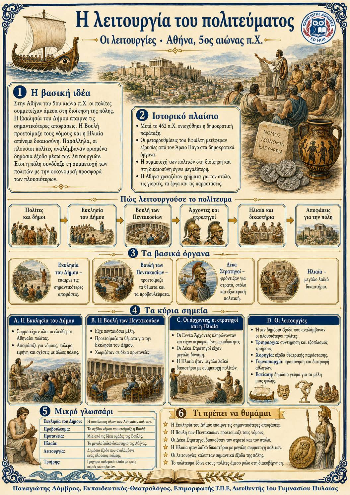

Πληροφοριογράφημα ενότητας
Το πληροφοριογράφημα αυτής της ενότητας δεν έχει ανέβει ακόμη. Οι σημειώσεις παραμένουν πλήρως διαθέσιμες.

Αθήνα, 5ος αιώνας π.Χ.
Στην Αθήνα του 5ου αιώνα π.Χ. οι πολίτες συμμετείχαν άμεσα στη διοίκηση της πόλης. Η Εκκλησία του Δήμου έπαιρνε τις σημαντικότερες αποφάσεις. Η Βουλή προετοίμαζε τους νόμους και η Ηλιαία απένεμε δικαιοσύνη. Παράλληλα, οι πλούσιοι πολίτες αναλάμβαναν ορισμένα δημόσια έξοδα μέσω των λειτουργιών. Έτσι η πόλη συνδύαζε τη συμμετοχή των πολιτών με την οικονομική προσφορά των πλουσιότερων.
Πολίτες και δήμοι ↓ Εκκλησία του Δήμου ↓ Βουλή των Πεντακοσίων ↓ Άρχοντες και στρατηγοί ↓ Ηλιαία και δικαστήρια ↓ Αποφάσεις για την πόλη
